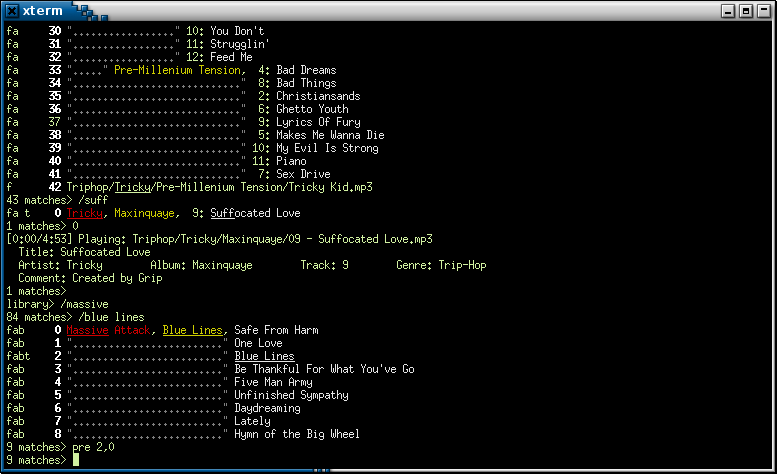

Lisp Project of the Day
shuffletron
You can support this project by donating at:


Or see the list of project sponsors.
shuffletron
| Documentation | 😀 |
| Docstrings | 😀 |
| Tests | 🥺 |
| Examples | 🥺 |
| RepositoryActivity | 🥺 |
| CI | 🥺 |
Shuffletron is a console music player. Today there will not be much of code, because I wasn't able to run this player on OSX. It crashes inside a libao C library:
[poftheday] qlot exec ./shuffletron.ros
This is Shuffletron 0.0.5
Library contains 1 files.
0 Baby Gramps, Rogue's Gallery: Pirate Ballads, Sea Songs, and Chanteys, 1: Cape Cod Girls
library>
Unhandled DIVISION-BY-ZERO in thread #<SB-THREAD:THREAD "Mixer thread 44,100 Hz" RUNNING
{1001593EA3}>:
arithmetic error DIVISION-BY-ZERO signalled
Backtrace for: #<SB-THREAD:THREAD "Mixer thread 44,100 Hz" RUNNING {1001593EA3}>
0: ("bogus stack frame")
1: ("foreign function: _ZN17SincKernelFactory19ReferenceSincKernelEiidd")
2: ("foreign function: _ZN10Resampler2C2Eddiiidb")
3: ("foreign function: _ZN19SampleRateConverter16ReplaceResamplerEv")
4: ("foreign function: _ZN19PCMConverterFactory6AddSRCER14StreamDescPairRK18ChainBuildSettingsRNSt3__16vectorIP22BufferedAudioConverterNS5_9allocatorIS8_EEEE")
5: ("foreign function: _ZN19PCMConverterFactory19BuildConverterChainERK14StreamDescPairRK18ChainBuildSettingsP19AudioConverterChainPS_")
6: ("foreign function: _AudioConverterNewInternal")
7: ("foreign function: DefaultOutputAUFactory")
8: ("foreign function: DefaultOutputAUFactory")
9: ("foreign function: DefaultOutputAUFactory")
10: ("foreign function: DefaultOutputAUFactory")
11: ("foreign function: DefaultOutputAUFactory")
12: ("foreign function: DefaultOutputAUFactory")
13: ("foreign function: ao_plugin_open")
14: ("foreign function: _open_device")
15: (MIXALOT::AO-OPEN-LIVE :INVALID-VALUE-FOR-UNESCAPED-REGISTER-STORAGE #.(SB-SYS:INT-SAP #X06043FE0) :INVALID-VALUE-FOR-UNESCAPED-REGISTER-STORAGE)
16: (MIXALOT::OPEN-AO :RATE 44100)
17: ((LAMBDA NIL :IN MIXALOT:CREATE-MIXER))
18: ((LABELS BORDEAUX-THREADS::%BINDING-DEFAULT-SPECIALS-WRAPPER :IN BORDEAUX-THREADS::BINDING-DEFAULT-SPECIALS))Here is how it should look like when up and running:

The only thing I can share right now is this small Roswell script I've used instead of overcomplicated Shuffletron's build scripts:
#!/bin/sh
#|-*- mode:lisp -*-|#
#|
exec ros -Q -- $0 "$@"
|#
(progn ;;init forms
(ros:ensure-asdf)
#+quicklisp
(ql:quickload '(:shuffletron)
:silent t))
(defpackage :ros.script.shuffletron
(:use :cl))
(in-package :ros.script.shuffletron)
(defun main (&rest argv)
(declare (ignorable argv))
(shuffletron:run))
;;; vim: set ft=lisp lisp:With this script you'll be able to run the program as ./shuffletron.ros or to build a binary with ros build shuffletron.ros.
On OSX you have to do brew install libao to install required C library.
Please, try it on your system whether it is OSX or Linux and let me know it started successfuly.
Brought to you by 40Ants under